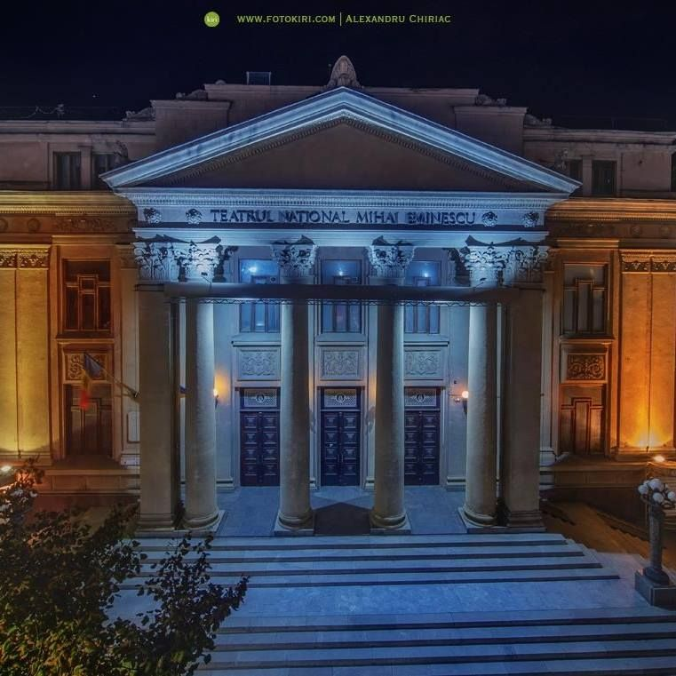

We are the first theatrical institution of Romanian expression in Bessarabia and the pilot ship of the cultural space between the Prut and Dniester officially inaugurated on October 6, 1921.
The "Mihai Eminescu" National Theater in Chisinau begins its history on October 10, 1920, when the first stable theater of Romanian expression in Bessarabia was established on the initiative of a group of leaders of the local public life of the time led by Sergiu T. Niță, minister of Bessarabia in the Romanian government, Ștefan Ciobanu, member of the Romanian Academy, writers: Nicolae N. Beldiceanu, Nicolae Beldiman, Leon Donici and director Gheorghe Mitu Dumitriu.